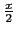

suivant: Transformer avec des fonctions
monter: Les expressions trigonométriques
précédent: Transformer une expression trigonométrique
Table des matières
Index
Transformer les expressions trigonomètriques et hyperboliques en tan(x/2) et en exp(x): halftan_hyp2exp
halftan_hyp2exp a comme argument une expression
trigonométrique ou hyperbolique.
halftan_hyp2exp transforme les
sin(x), cos(x) et tan(x)
contenus dans l'expression en fonction de
tan() et
de exp(x).
On tape :
halftan_hyp2exp(tan(x)+tanh(x))
On obtient :
(2*tan(x/2))/((1-(tan(x/2))^2))+(((exp(x))^2-1))/ (((exp(x))^2+1))
On tape :
halftan_hyp2exp(sin(x)^2+cos(x)^2-sinh(x)^2+cosh(x)^2)
On obtient, après simplification avec normal(ans()) :
2
Documentation de giac écrite par Renée De Graeve